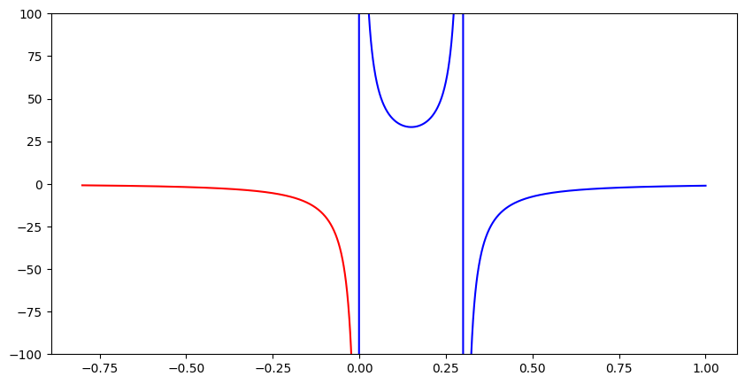

9. 色散读取¶

（两能级、三能级、六能级模型下，谐振腔频率/腔内光子数随测量强度的变化，红线对应的是比特处于 |0⟩，蓝色虚线对应 |1⟩，灰色虚线对应 |2⟩。）
由于比特与读取腔耦合后，读取腔本身的频率发生变化，理论上很难测量到腔的本征频率。但是当读取腔内的光子数较多时，腔的频率逐渐接近本征频率。因此 \(\omega_r\) 可以采用高功率进行快速标定。
在 \(g/\Delta << 1\) 的色散区域（dispersive regime），谐振子的共振频率 \(\omega_r\) 受量子比特影响产生位移（shift） \(\chi\) ，其中 \(\Delta=\omega_q-\omega_r\) 是量子比特和谐振子的频率差。
对于两能级系统，低功率下的读取腔的频率在比特不同态下有区分，而光子数几乎没有区别。
\[ \chi=g^2/\Delta \tag{9.1} \]当 \(q\rightarrow\ket{1}\) , 谐振腔的共振频率发生偏移 \(\omega_r+\chi\)
当 \(q\rightarrow\ket{0}\) , 谐振腔的共振频率发生偏移 \(\omega_r-\chi\)
考虑到量子比特存在更高能级，在三能级模型中，不仅低功率下频率有区别，高功率下的光子数也有区别。
\[ \chi=g^2/\Delta(1+\Delta/(\omega_{21}-\omega_{10})) \tag{9.2} \]
e.g. 求色散位移
qubit 和 res 频率差 1GHz，耦合强度为 50MHz，非谐性 -230MHz。色散位移为 -0.467Mhz。
# 计算色散位移量
def fun_shift2(delt0,g0):
delt=delt0*PI2*ghz # GHz
g=g0*PI2*mhz # MHz
chi=g**2/delt
return chi/PI2/mhz # MHz
# 高阶修正
def fun_shift3(delt0,g0,alph0):
delt=delt0*PI2*ghz # GHz
g=g0*PI2*mhz # MHz
alph=alph0*PI2*mhz # MHz
chi=g**2/delt/(1+delt/alph)
return chi/PI2/mhz # MHz
print(fun_shift2(-1,50), "MHz")
print(fun_shift3(-1,50,-230), "MHz")
-2.5000000000000004 MHz
-0.467479674796748 MHz
import matplotlib.pyplot as plt
fig=plt.figure(figsize=(10,5))
x1=numpy.linspace(-0.8,0,1000)
x2=numpy.linspace(-0.01,1,1000)
ax=fig.add_subplot()
# 红色部分一般的色散区域，失谐量<0，色散位移<0
ax.plot(x1,fun_shift3(x1,50,-300),'r')
ax.plot(x2,fun_shift3(x2,50,-300),'b')
ax.set_ylim([-100,100])
plt.show()
